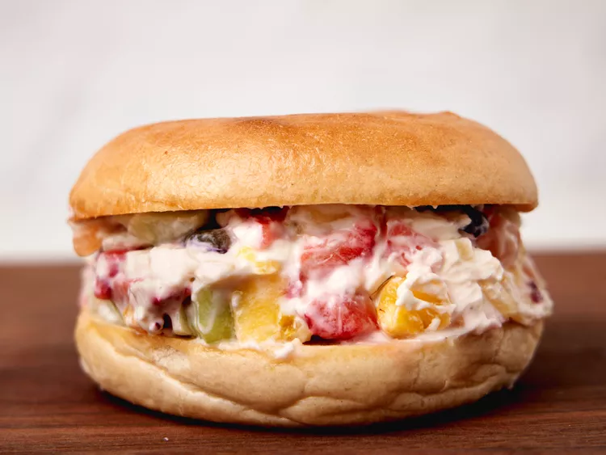

Fruit Pizza Chopped Bagel

Description
This fruit pizza chopped bagel delivers perfect bites all around. Filled with a quickly chopped-together cream cheese and fruit spread, it's fruit pizza, bagel-style.
Ingredients
- 1 plain bagel, sliced in half horizontally
- 2 ounces cream cheese, softened
- 1 tablespoon confectioner's sugarv
- 1/2 cup mixed fruit, such as pineapple, strawberries, melon
Steps
- Toast bagel until golden brown, about 3 minutes.
- Meanwhile, slightly spread cream cheese on a cutting board. Add powdered sugar and fruit and chop and mix until chunky and well incorporated.
- Gather mixture together; scrape up with a spatula or bench scraper. Spread mixture onto bottom of toasted bagel and place top piece on top. Serve immediately.